Explore Ahmedabad
A Brief History
Ahmedabad was founded in 1411 on the Sabarmati River as the Gujarat Sultanate's capital. Pols, stepwells, and mosques with carved stone screens illustrate Indo-Islamic merchant architecture, while Gandhi's ashram links the city to India's independence movement and modern textile industry. Sabarmati riverfront walks and pol neighbourhoods preserve sultanate-era merchant lanes beside modern Gujarat industry.
Attractions Map
Top Sights & Activities
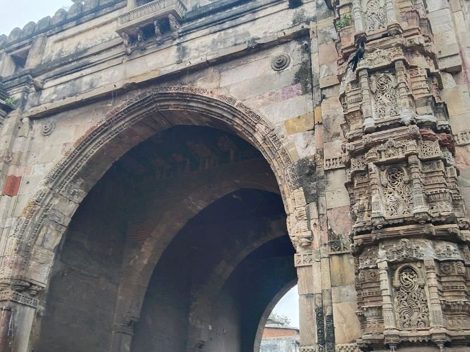
Teen Darwaja
Teen Darwaja, a remarkable stone gateway dating back to the 1400s, was constructed by Ahmad Shah and is steeped in legendary tales. This site serves as a starting point for an enchanting walking tour that meanders through Ahmedabad's historical heart. The journey takes you from the Calico Dome to significant landmarks like the Sidi Aiyed Mosque and Bhadra Fort, culminating at the exquisite wooden haveli in Lakha Patel ni Pol.
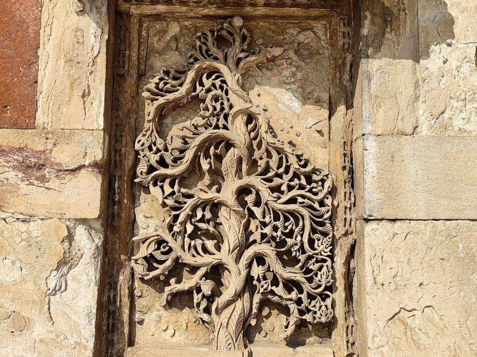
Jama Masjid (Sunni)
Jama Masjid, a yellow-sandstone mosque, was built in 1424 by Sultan Ahmed Shah I in Ahmedabad. It is not only the city's but also the country's most popular and beautiful mosque. The intriguing history of its construction and the materials used are interlinked with its architecture. Adjacent to the mosque lies a mausoleum where Sultan Ahmed Shah I, his son, and grandson are buried.
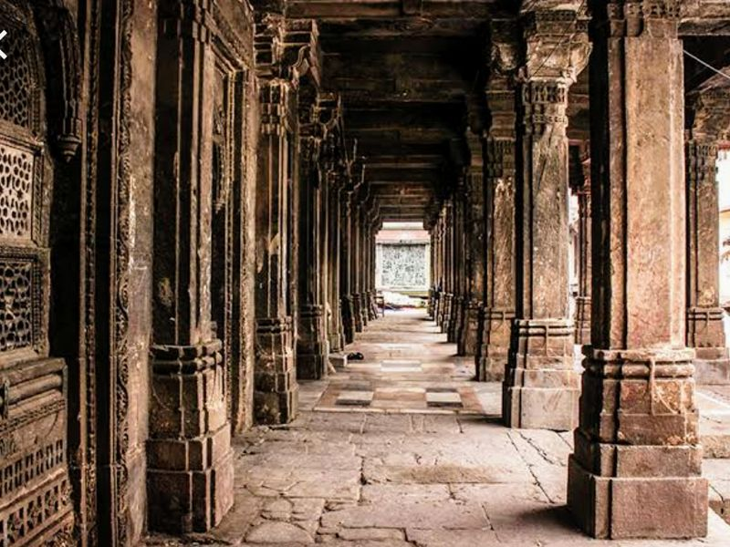
Rani no Hajiro
Rani no Hajiro, also known as Mughalai Bibis Tomb, is a historic tomb complex in Ahmedabad that dates back to the time of Ahmed Shah and other Gujarat Sultanate rulers. This elaborate structure is adorned with intricate mother-of-pearl and metal work and serves as the final resting place for the queens of the empire.
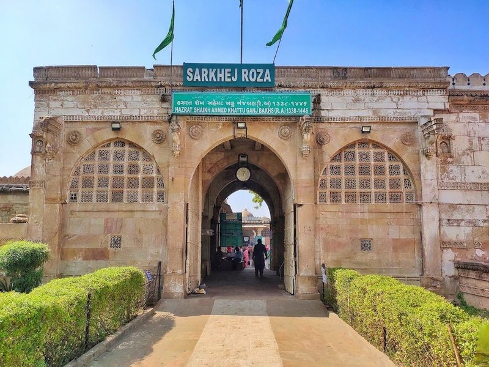
Sarkhej Roza
Sarkhej Roza is a captivating mosque and tomb complex that beautifully showcases the Indo-Saracenic architectural style, completed in 1451. Nestled amidst a serene landscape featuring a tranquil lake, this historical site reflects the rich Islamic culture intertwined with Persian influences and elements from Hindu and Jain traditions. Often hailed as the Acropolis of Ahmedabad, Sarkhej Roza stands as a testament to the city's heritage during Sultan Mahmud Begada's reign.
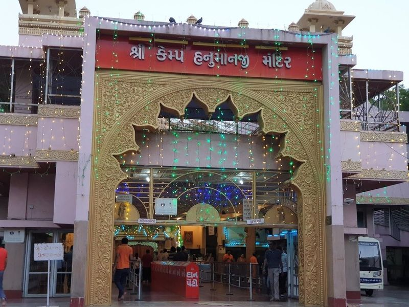
Shree Camp Hanumanji Mandir
Shree Camp Hanumanji Mandir, located in the Cantonment area of Ahmedabad, is a significant Hindu temple complex dedicated to Lord Hanuman. Established over a century ago, it features a gold-plated statue of Lord Hanuman in the main sanctum sanctorum. The temple is known for its serene and spiritual ambiance, drawing visitors from across the nation seeking blessings and solace.
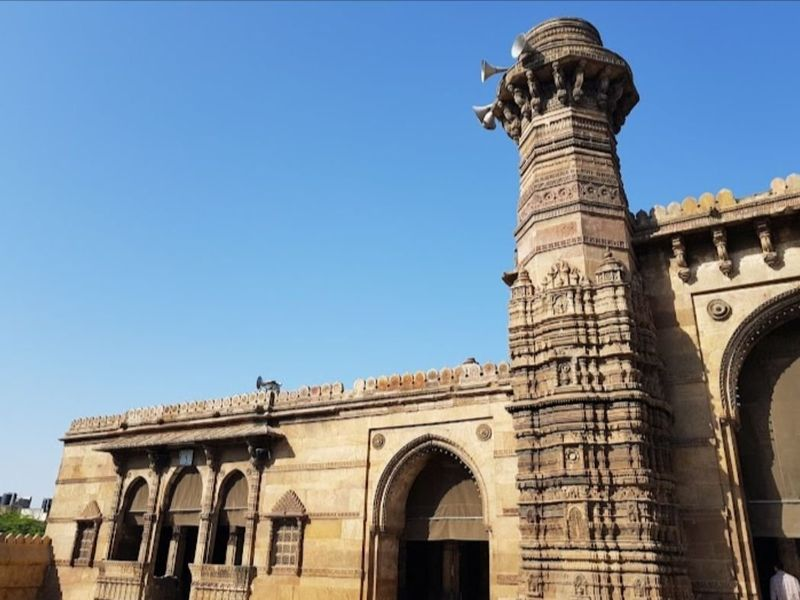
Jhulta Minar, Bibiji Masjid
Jhulta Minar, also known as the Shaking Minarets, is a fascinating architectural wonder located in Ahmedabad, Gujarat. Situated within the Sidi Bashir Mosque complex, these minarets are renowned for their unique shaking phenomenon. When one minaret is shaken, the other starts shaking on its own despite being connected by intricate arches and corridors. This perplexing optical illusion has puzzled visitors for centuries and remains an unsolved mystery to this day.
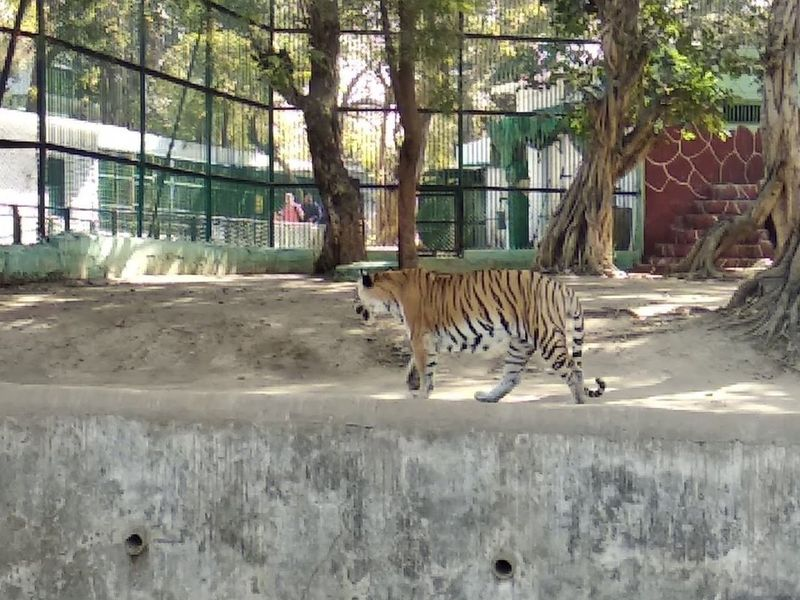
Kamla Nehru Zoological Garden
Kamla Nehru Zoological Garden, also known as Kankaria Zoo, is a wildlife park located in Ahmedabad. Established in 1951, it spans across 117 acres and is home to over 450 animals, 2000 birds, and 140 reptiles. The zoo features albino animals and endangered bird species. Visitors can also enjoy attractions like an amusement park, children's park, toy train, and balloon safari within the premises.
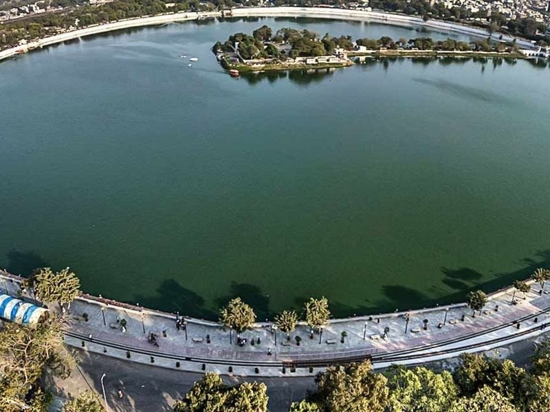
Kankaria Lake
Kankaria Lake, a manmade marvel dating back to the 15th century, offers an array of attractions and activities for visitors. From boating and tethered balloon rides to a zoo, children's park, amusement park, and natural history museum along its shores, there's no shortage of entertainment. The lake also features an artificial island called Nagina Wadi accessible via a walkway.
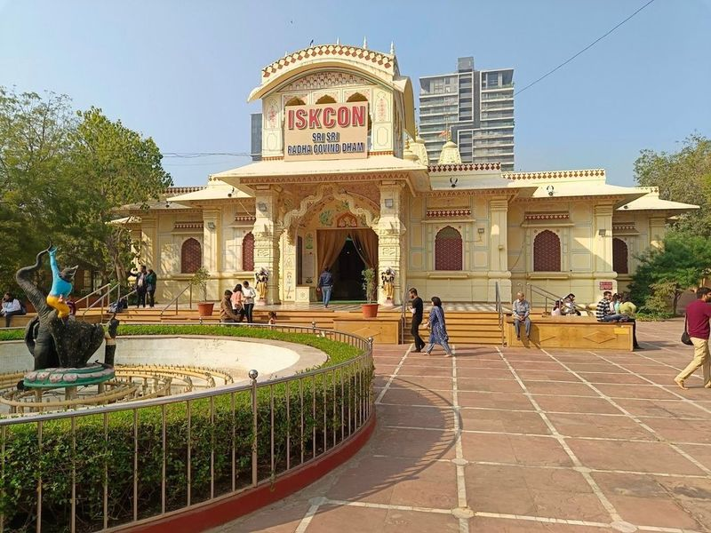
ISKCON Temple, Ahmedabad
ISKCON Temple in Ahmedabad, also known as the Hare Krishna Temple, is a serene and beautiful compound located on Satelite Road, Sarkhej. The temple features a 12,000-sq.-ft. temple room adorned with intricate artwork and mesmerizing statues of Lord Krishna. It offers a peaceful atmosphere for meditation and spiritual contemplation.
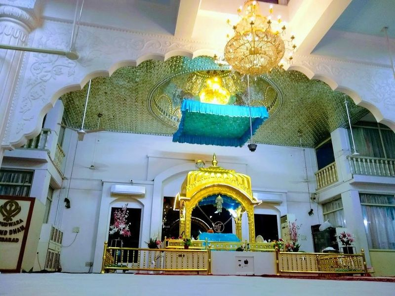
Gurdwara Gobind Dham, Thaltej, Ahmedabad
Nestled in the bustling area of Thaltej, Gurudwara Gobind Dham stands as a beacon of tranquility and spirituality in Ahmedabad. This Sikh temple is renowned for its architecture, featuring a striking golden altar and intricately designed ceiling tiles that shimmer under colorful lights at night. The serene white and gold dome enhances the overall beauty, creating an inviting atmosphere for visitors seeking peace.
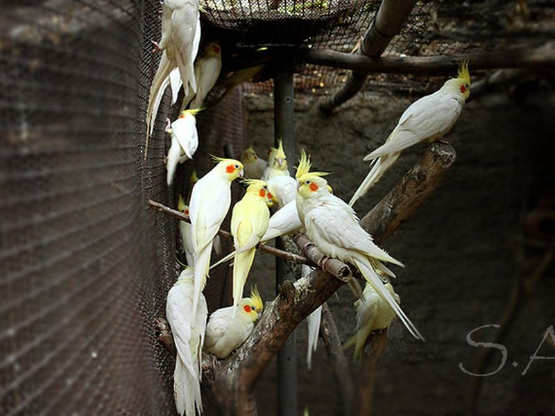
Sundarvan
Sundarvan is listed among principal sites for Ahmedabad within India. Municipal and regional heritage listings document its place in the historic centre and travellers routes through Ahmedabad. Sundarvan is listed among principal sites for Ahmedabad within India.
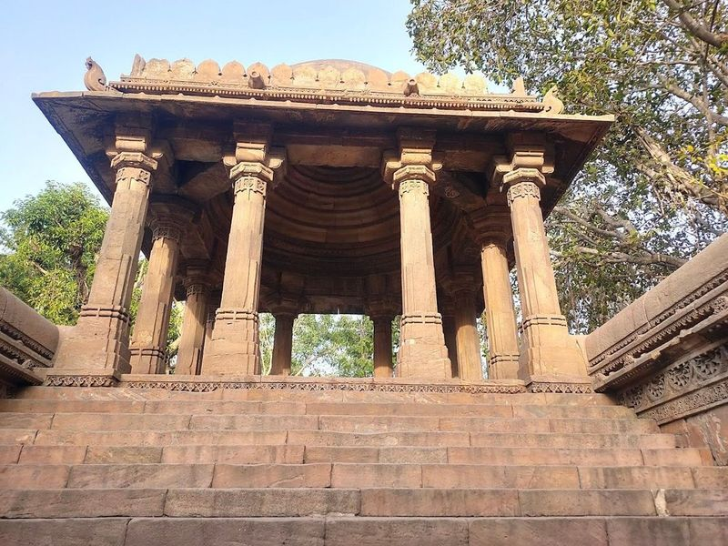
Bai Harir Sultani Vav
Bai Harir Vav in Ahmedabad is an ancient underground stepwell dating back to the 15th century. It is named after Dhai Harir, the superintendent of Sultan Mahmud Begada's harem. The stepwell features elaborate carvings, cascading steps, and cool waters. Visitors can admire the intricate motifs and ornate columns as they descend into its depths.
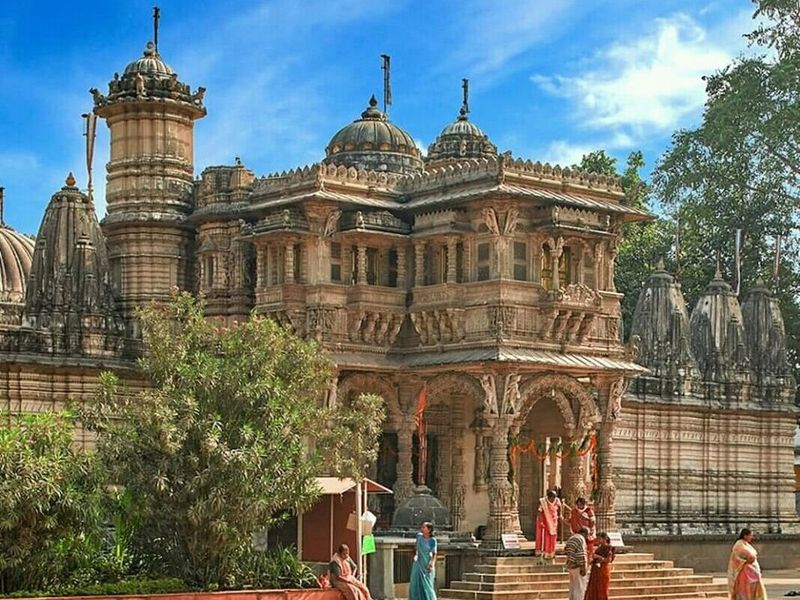
Hutheesing Jain Temple
The Hutheesing Jain Temple, also known as Hatheesingh Jain Derasar, is a 19th-century marvel located in Madhupura locality of Ahmedabad, Gujarat. Constructed in 1850 by Seth Hutheesing, this grand Jain temple is dedicated to Lord Dharmnath, the 15th Jain Tirthankara.
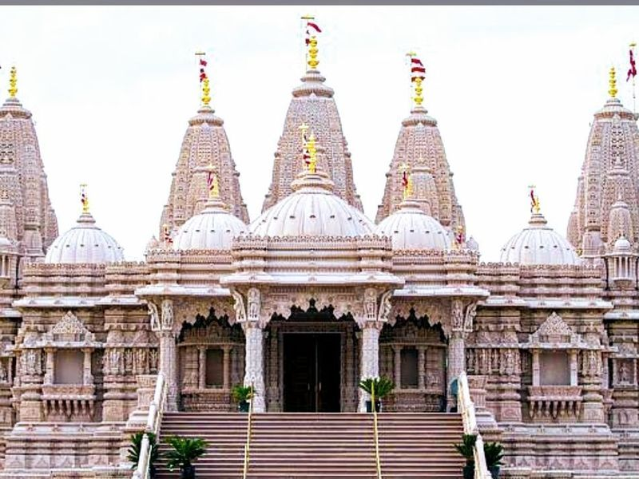
BAPS Shri Swaminarayan Mandir
The BAPS Shri Swaminarayan Mandir is a beautiful and peaceful Hindu temple located in Ahmedabad. The temple features ornate interiors, domes and towers, as well as multiple shrines. The management of the temple is excellent, and the facility is well maintained by parents who will love to visit with their children. The interior of the temple is amazing, and features a Nilkanth Varni Temple which has been renovated.
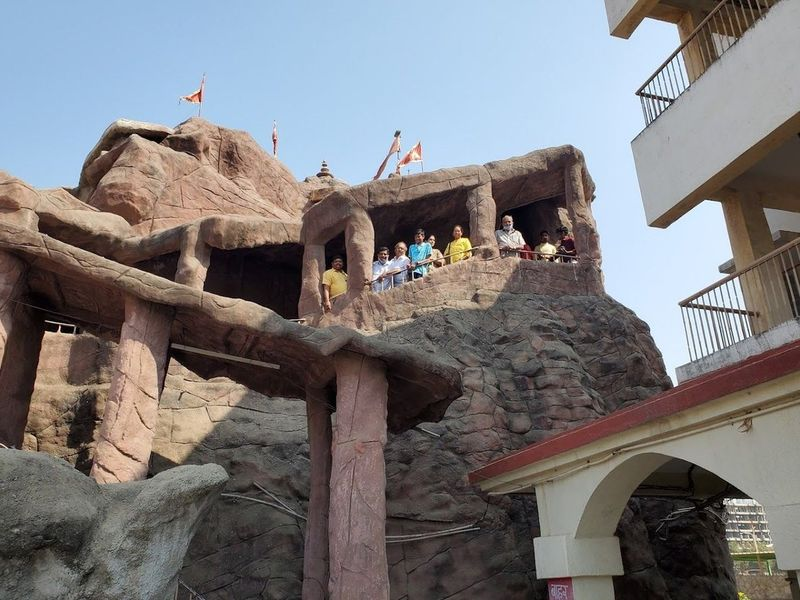
Shri Maa Vaishnodevi Temple, Ahmedabad
Located 19 km from Ahmedabad Junction, the Shri Maa Vaishnodevi Temple is a significant Hindu pilgrimage site in Ahmedabad. Built in 2007, this temple is dedicated to Goddess Vaishnodevi and replicates the original temple in Jammu Kashmir. Situated on the Sarkhej - Gandhinagar highway, it features small caves and a man-made hill made of sandstone.
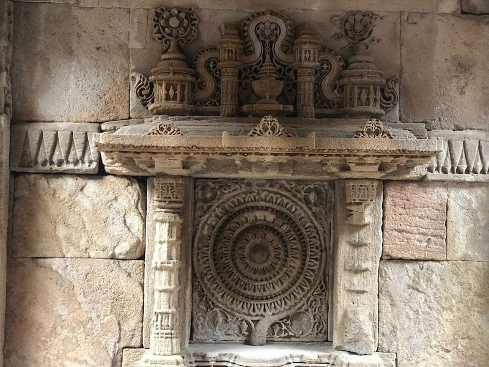
Ambapur Ni Vav Gandhinagar
Ambapur Ni Vav, a 15th-century stepwell, is an architectural gem nestled near the village of Ambapur, just on the outskirts of Ahmedabad. This five-story marvel was commissioned by Queen Rudabai Vaghela and showcases intricate carvings that beautifully blend Indian and Islamic design elements. Historically significant, it served as a vital water source for local communities in Gujarat's semi-arid landscape, providing water for drinking and bathing.
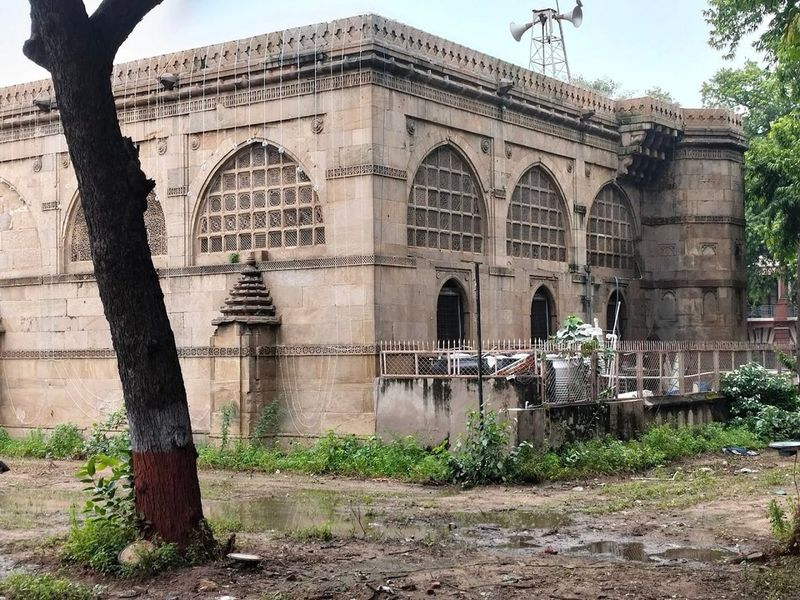
Sidi Saiyyed Masjid (sunni)
Sidi Saiyyed Mosque, constructed in 1573, is a example of Islamic architecture located in Ahmedabad. The mosque is famous for its intricate latticework, particularly the delicate tree designs carved into its stone windows. This architectural gem showcases the influence of the African diaspora in India and features a mesmerizing sixteen-foot Sidi Saiyyed Jaali with the Tree of Life motif.
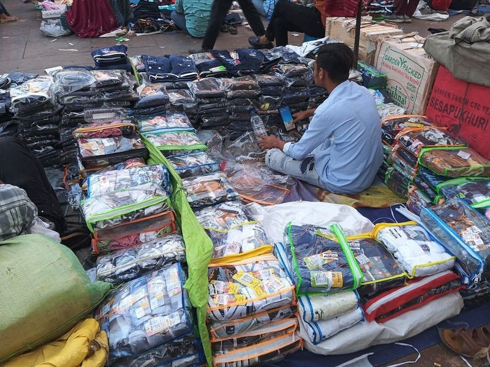
Laal Darwaza Market
Laal Darwaza Market is a bustling and street market in Ahmedabad, offering a wide range of products including clothing, electronics, local street food, sarees, fabrics, handicrafts, books and more. It is one of the city's oldest shopping centers and exudes a lively energy that draws numerous tourists. The market is known for its diverse offerings and great deals on souvenirs. Nearby attractions like the historical Teen Darwaza add to the allure of this bustling area.
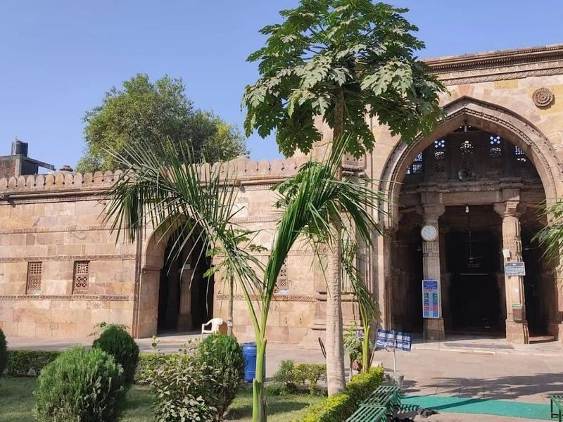
Shahi Jam-e-Masjid LaL Darwaja
Shahi Jam-e-Masjid Bhadra, located in Ahmedabad, was originally built within the Bhadra citadel for royal members to offer prayers. Constructed by Sultan Ahmad Shah in 1414, this elegant mosque features a central hall with arched openings and stone windows, showcasing an early architectural style in Ahmedabad. The prayer hall boasts 15 domes and 260 pillars, while the courtyard is colonnaded on three sides.
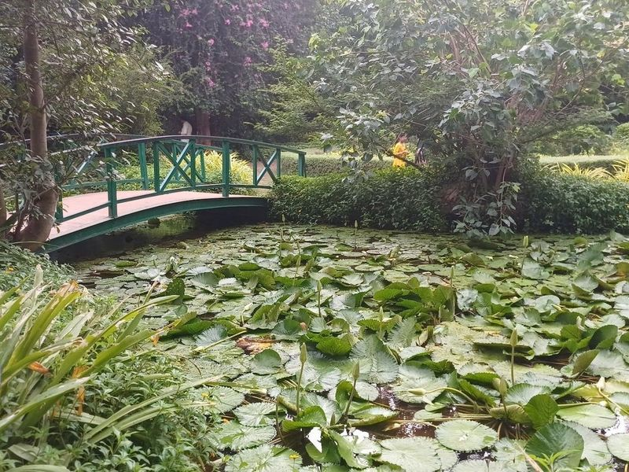
Law Garden
Law Garden is a popular public garden and market located near the Law College in Ahmedabad. The garden is surrounded by lush greenery and features a bustling evening market that extends till midnight. Visitors can explore stalls selling saris, embroidered textiles, local crafts, and other glittering wares from the Saurashtra and Kutch regions. The market is known for its premium quality ethnic Gujarati handicraft goods, making it a popular shopping destination for both locals and tourists.
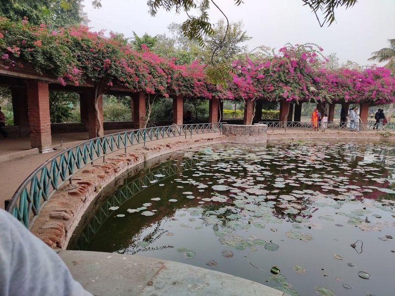
Parimal Garden
Parimal Garden in Ahmedabad is a romantic oasis, offering a serene escape within the city. The garden boasts flowers, lush greenery, and various romantic spots like blooming trees and peaceful corners overlooking a pond. It's also a popular picnic spot with shady areas, benches, a children's playground, and a majestic pond with a fountain. The well-maintained garden is home to diverse bird species and provides facilities such as clean washrooms and free drinking water.
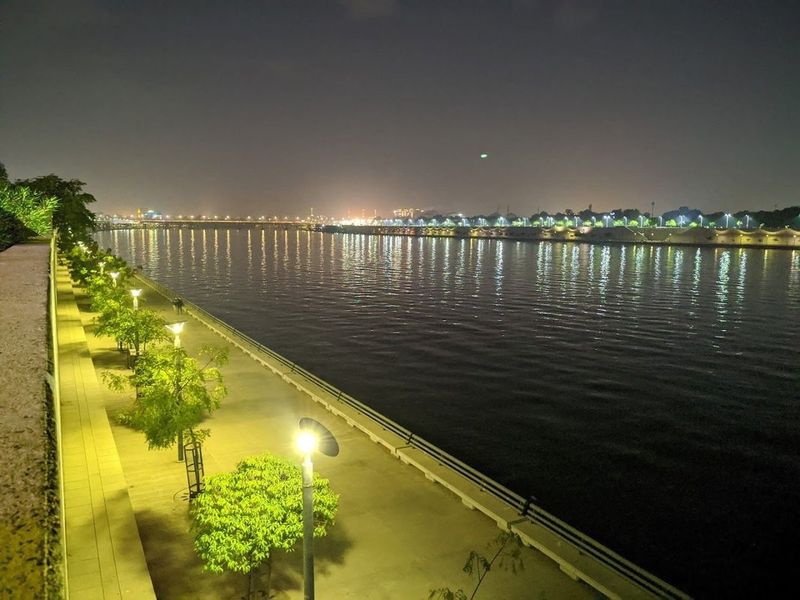
Sabarmati Riverfront
Sabarmati Riverfront in Ahmedabad is a must-visit destination, offering a variety of attractions and activities. The Sabarmati Ashram, located on the river's shores, is a significant historical site where Mahatma Gandhi spent several years. It now serves as a museum showcasing objects related to India's fight for independence. The riverfront promenade features parks, boating facilities, zip-line amusements, and markets.

Shree Vallabh Sadan Haveli
Shree Vallabh Sadan Haveli is listed among principal sites for Ahmedabad within India. Municipal and regional heritage listings document its place in the historic centre and travellers routes through Ahmedabad. Shree Vallabh Sadan Haveli is listed among principal sites for Ahmedabad within India.
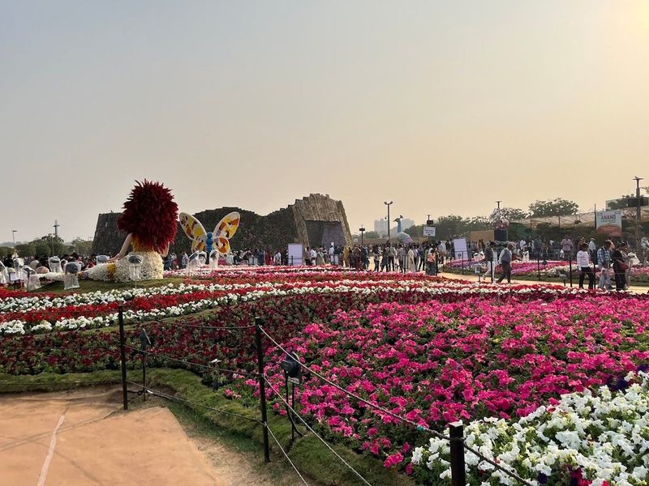
Sabarmati Riverfront Flower Park
Nestled along the banks of the Sabarmati River, the Riverfront Flower Park is a retreat for nature enthusiasts and weary travelers alike. This bi-level promenade invites visitors to stroll or cycle while soaking in the beauty of over 72 flower species, each thoughtfully categorized by fragrance and theme. Whether you're looking to unwind before a long journey or simply enjoy a peaceful day out, this park serves as an oasis of tranquility amidst Ahmedabad's bustling atmosphere.
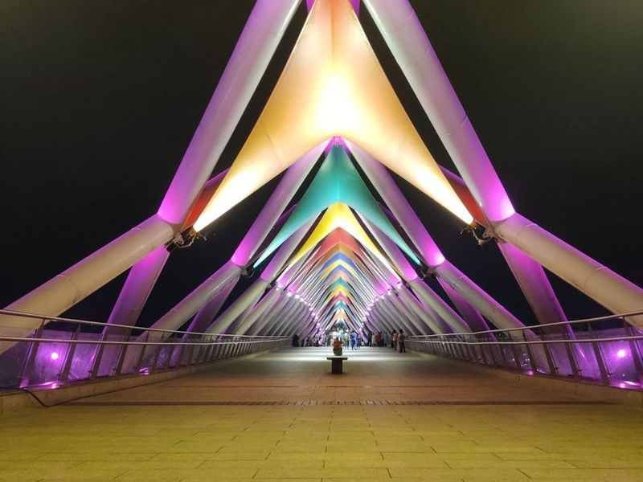
Atal Bridge
The Atal Bridge in Ahmedabad is a remarkable and structure, being the first of its kind in India. This glass pedestrian bridge spans the Sabarmati Riverfront, connecting the eastern and western parts of the river. Inspired by the Kite Festival, it offers seating for visitors to enjoy the beauty of the river. The design draws inspiration from kites and reflects the colors of Uttrayan celebration.

Akshar River Cruise
Akshar River Cruise is listed among principal sites for Ahmedabad within India. Municipal and regional heritage listings document its place in the historic centre and travellers routes through Ahmedabad. Akshar River Cruise is listed among principal sites for Ahmedabad within India.
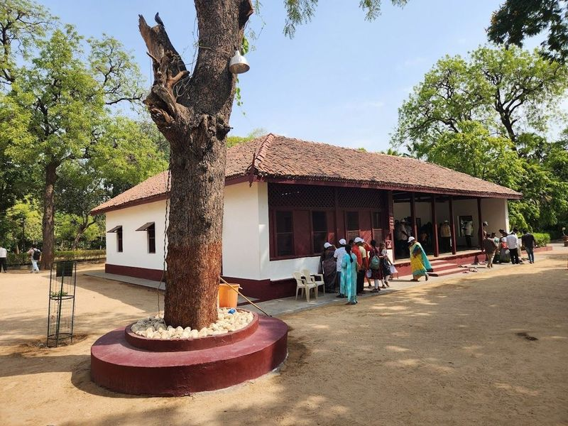
Sabarmati Ashram
Sabarmati Ashram, also known as Gandhi Ashram or Satyagraha Ashram, is a significant site of Hindu spirituality located in the Sabarmati suburb of Ahmedabad, Gujarat. It served as the residence for Mahatma Gandhi and his wife Kasturba Gandhi. The ashram is renowned for being the starting point of Gandhi's famous Dandi March.